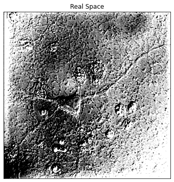
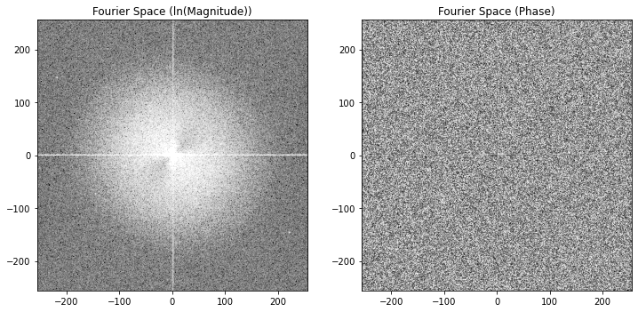
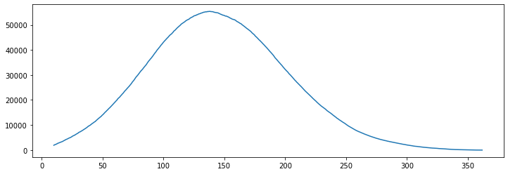
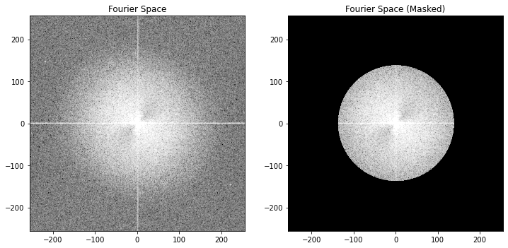
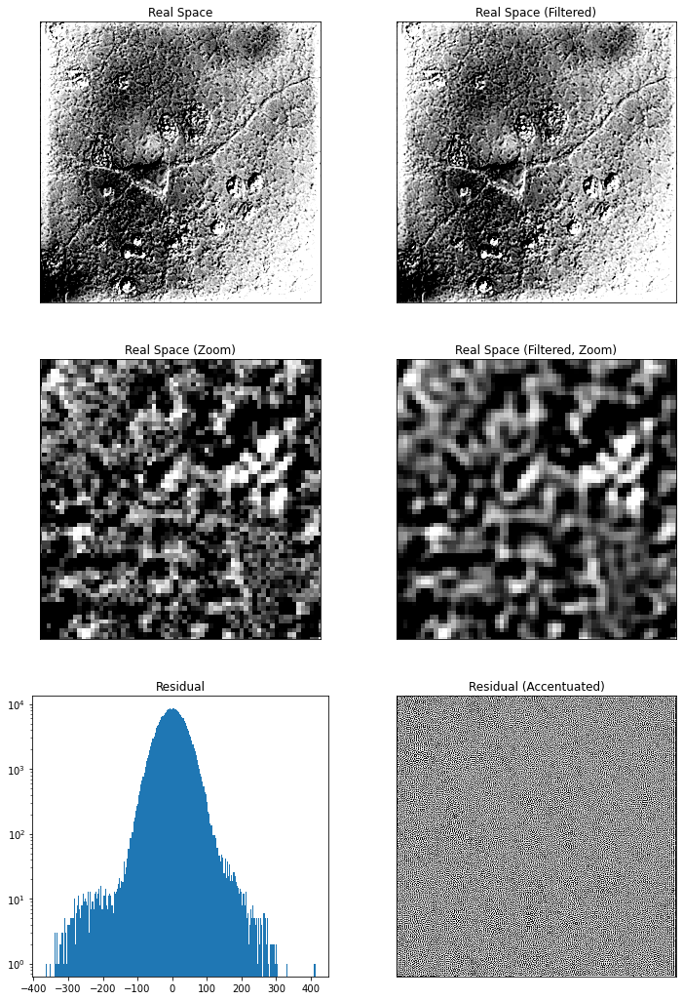
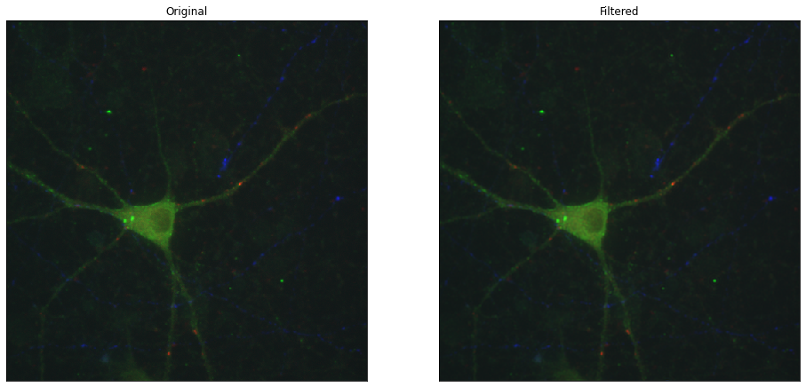
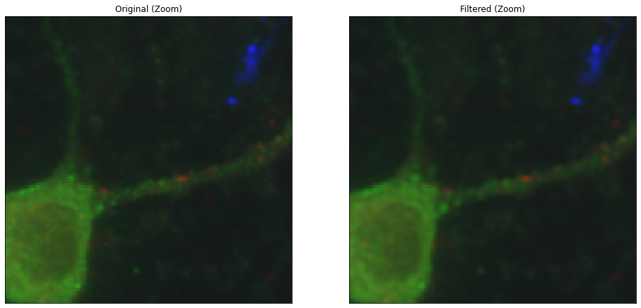

import numpy as np
import matplotlib.pyplot as pltAutomatic Aperture Filtering for Microscopy Using Shapes
microscopy
filter
Fourier
This notebook is an example of how to remove high frequency noise in your image by infering the shape of the aperture (in Fourier space) of your microscope.
Overview
The aperture/pupil in the back focal plane (BFP) of a microscope determines the resolution of the image that can be captured by the microscope. For a microscope, the aperture is basically the tube inside the microscope through which light passes. The BFP exists in Fourier space, and the aperture essentially blocks spatial frequencies beyond its width at the BFP. In the corresponding image at the camera, any spatial frequencies beyond the aperture width in the BFP cannot possibly have been made by the sample, because they were blocked by the aperture from getting to the camera. The goal is to utilize this understanding of the inner workings of the microscope to denoise a microscopy image by accounting for the aperture/pupil in the BFP.
We remove high-frequency noise that is beyond the aperture by modeling the pupil function of the image (i.e., the aperture) as a big circle and removing frequencies in the image outside of the aperture. By Fourier transforming the image, we expect to see non-zero power from spatial frequencies out to some radius away from the center – that circle is the aperture. Beyond this circle, the power should be zero, based on our physical understanding of a microscope.
In this example, we vary the radius of the circle to model the Fourier transformed image as zeros outside of the circle, and some number greater than zero inside the circle. Once the best pupil function is found, i.e. the one whose shape best matches the experimentally observed Fourier image, any spatial frequencies in the image beyond this point are zeroed out to low-pass filter that noise out of the image.
We’re using the Rat Hippocampal Neuron .tif file example from FIJI, which has several color channels in this notebook.
## Open the file. It was opened from FIJI and then File > save as > Tif
from skimage import io
img0 = io.imread('Rat_Hippocampal_Neuron.tif').astype('double') ## from FIJI examples
## Use the DIC image to find the aperture
img = img0[-1]
## Plot image
fig,ax=plt.subplots(1,1,figsize=(6,6))
ax.imshow(img,cmap='Greys_r',origin='lower',vmin=img.mean()-1.*img.std(),vmax=img.mean()+1.*img.std())
ax.set_title('Real Space')
plt.tick_params(bottom=False, left=False, labelleft=False, labelbottom=False)
plt.show()
## Calculate various Fourier transform things
ft = np.fft.fftshift(np.fft.fft2(img))
mag_img = np.sqrt(ft.real**2. + ft.imag**2.)
phase_img = np.unwrap(np.arctan(ft.imag/ft.real))
ln_mag = np.log(mag_img)## Plot the magnitude and phase of the Fourier transform of the image
fig,ax=plt.subplots(1,2,figsize=(12,6))
vmin,vmax = np.percentile(ln_mag,(1,99))
ax[0].imshow(ln_mag,cmap='Greys_r',origin='lower',vmin=vmin,vmax=vmax,
extent=[-ln_mag.shape[1]/2.,ln_mag.shape[1]/2., -ln_mag.shape[0]/2., ln_mag.shape[0]/2. ])
ax[0].set_title('Fourier Space (ln(Magnitude))')
ax[1].imshow(phase_img,cmap='Greys_r',origin='lower',
extent=[-phase_img.shape[1]/2.,phase_img.shape[1]/2., -phase_img.shape[0]/2., phase_img.shape[0]/2. ])
ax[1].set_title('Fourier Space (Phase)')
plt.show()
This evidence function calculates a circular mask/template given a radius, r0. Any pixels within r0 have value 1. and any outside r0 have value 0. It’s like a 2D tophat function.
The evidence for this template is for m>0, b in R, tau>0 (SI 2.2.2). It is compared against the evidence for a flat or ‘Null’ template (i.e., m=0, b in R, tau >0 (SI 2.2.4).
This function returns the (negative) ratio of those two evidence functions so that the minimzer functions in scipy.optimize can find the maximum.
## pre-computed mask calculation parameters
nx,ny = ft.shape
kx,ky = np.mgrid[0:nx,0:ny]
kx = kx.astype('double') - nx/2.
ky = ky.astype('double') - ny/2.
kr2 = kx**2. + ky**2.
from scipy.special import betainc,betaln,gammaln
def ln_bayes_factor(theta,y):
r0 = theta
## model is out of bounds
if r0 < 5:
return np.inf
## make the template
x = (kr2 < r0**2.).astype('double')
N=float(x.size)
ex = np.nanmean(x)
exx = np.nanmean(x*x)
ey = np.nanmean(y)
eyy = np.nanmean(y*y)
exy = np.nanmean(x*y)
vx = exx - ex*ex + 1e-300
vy = eyy - ey*ey + 1e-300
vxy = exy - ex*ey + 1e-300
r = vxy/np.sqrt(vx*vy)
r2 = r*r
if r2 < 1e-10 or r2 > 1.-1e-10:
return np.inf
M = (N-2.)/2.
delm = 1e30
lnR = np.log(2.) + np.log(delm) - betaln(.5,M) + .5*np.log(vx) - .5*np.log(vy) + M*np.log(1.-r2) - np.log(1.+np.sign(r)*betainc(.5,M,r2))
return lnR
print(ln_bayes_factor((50.),ln_mag))-13934.824440777767### Scan the r0 parameter to see if there is a maximum
xs = np.linspace(10,400,1000)*1.
ev = np.zeros_like(xs)
from tqdm.notebook import trange
for i in trange(xs.size):
ev[i] = -ln_bayes_factor((xs[i]),ln_mag)
fig,ax = plt.subplots(1,figsize=(12,4))
ax.plot(xs,ev)
plt.show()
### Find the maximum prob aperture mask radius
from scipy.optimize import minimize
def wrapper(initial_guess,ln_mag):
return -1./(1.+np.exp(ln_bayes_factor(initial_guess,ln_mag)))
initial_guess = np.array((xs[np.nanargmax(ev)]))
out = minimize(wrapper, initial_guess, args=ln_mag, method='Nelder-Mead')
print(out)
r0 = out.x
mask = (kr2 < r0**2.).astype('int') final_simplex: (array([[138.43843844],
[138.43849125]]), array([-1., -1.]))
fun: -1.0
message: 'Optimization terminated successfully.'
nfev: 53
nit: 18
status: 0
success: True
x: array([138.43843844])### Plot the best mask
fig,ax=plt.subplots(1,2,figsize=(12,6))
ax[0].imshow(ln_mag,cmap='Greys_r',origin='lower',vmin=vmin,vmax=vmax,
extent=[-ln_mag.shape[1]/2.,ln_mag.shape[1]/2., -ln_mag.shape[0]/2., ln_mag.shape[0]/2.])
ax[1].imshow(ln_mag*mask,cmap='Greys_r',origin='lower',vmin=vmin,vmax=vmax,
extent=[-ln_mag.shape[1]/2.,ln_mag.shape[1]/2., -ln_mag.shape[0]/2., ln_mag.shape[0]/2.])
ax[0].set_title('Fourier Space')
ax[1].set_title('Fourier Space (Masked)')
plt.show()
### Calculate and Plot the low pass filtered image
filtered = ft*(mask+mask*1j)
filtered = np.fft.ifft2(np.fft.fftshift(filtered)).real
residual = img-filtered
fig,ax=plt.subplots(3,2,figsize=(12,18))
ax[0,0].imshow(img,cmap='Greys_r',origin='lower',vmin=img.mean()-1.*img.std(),vmax=img.mean()+1.*img.std())
ax[0,1].imshow(filtered,cmap='Greys_r',origin='lower',vmin=img.mean()-1.*img.std(),vmax=img.mean()+1.*img.std())
ax[1,0].imshow(img,cmap='Greys_r',origin='lower',vmin=img.mean()-1.*img.std(),vmax=img.mean()+1.*img.std())
ax[1,1].imshow(filtered,cmap='Greys_r',origin='lower',vmin=img.mean()-1.*img.std(),vmax=img.mean()+1.*img.std())
ax[2,0].hist(residual.flatten(),bins=250,log=True)
ax[2,1].imshow(residual,cmap='Greys_r',origin='lower',vmin=np.percentile(residual,35),vmax=np.percentile(residual,65))
for aa in ax[1]:
aa.set_xlim(64,128)
aa.set_ylim(64,128)
ax[0,0].set_title('Real Space')
ax[0,0].tick_params(bottom=False, left=False, labelleft=False, labelbottom=False)
ax[0,1].set_title('Real Space (Filtered)')
ax[0,1].tick_params(bottom=False, left=False, labelleft=False, labelbottom=False)
ax[1,0].set_title('Real Space (Zoom)')
ax[1,0].tick_params(bottom=False, left=False, labelleft=False, labelbottom=False)
ax[1,1].set_title('Real Space (Filtered, Zoom)')
ax[1,1].tick_params(bottom=False, left=False, labelleft=False, labelbottom=False)
ax[2,0].set_title('Residual')
ax[2,1].set_title('Residual (Accentuated)')
ax[2,1].tick_params(bottom=False, left=False, labelleft=False, labelbottom=False)
plt.show()
### Show the original and filtered image (first three fluorescence channels) in RGB
filtered = np.zeros((nx,ny,3))
full = np.zeros_like(filtered)
for i in range(3):
ft = np.fft.fftshift(np.fft.fft2(img0[i]))
fd = ft*(mask+mask*1j)
fd = np.fft.ifft2(np.fft.fftshift(fd)).real
filtered[:,:,i] = fd
full[:,:,i] = img0[i]
scaling = full.max((0,1))[None,None,:]
filtered /= scaling
full /= scaling
fig,ax = plt.subplots(1,2,figsize=(16,8))
ax[0].imshow(full,origin='lower',interpolation='nearest')
ax[0].tick_params(bottom=False, left=False, labelleft=False, labelbottom=False)
ax[1].imshow(filtered,origin='lower',interpolation='nearest')
ax[1].tick_params(bottom=False, left=False, labelleft=False, labelbottom=False)
ax[0].set_title('Original')
ax[1].set_title('Filtered')
plt.show()
fig,ax = plt.subplots(1,2,figsize=(16,8))
ax[0].imshow(full,origin='lower',interpolation='nearest')
ax[1].imshow(filtered,origin='lower',interpolation='nearest')
ax[0].tick_params(bottom=False, left=False, labelleft=False, labelbottom=False)
ax[1].tick_params(bottom=False, left=False, labelleft=False, labelbottom=False)
ax[0].set_title('Original (Zoom)')
ax[1].set_title('Filtered (Zoom)')
for aa in ax:
aa.set_xlim(200,328)
aa.set_ylim(200,328)
plt.show()
